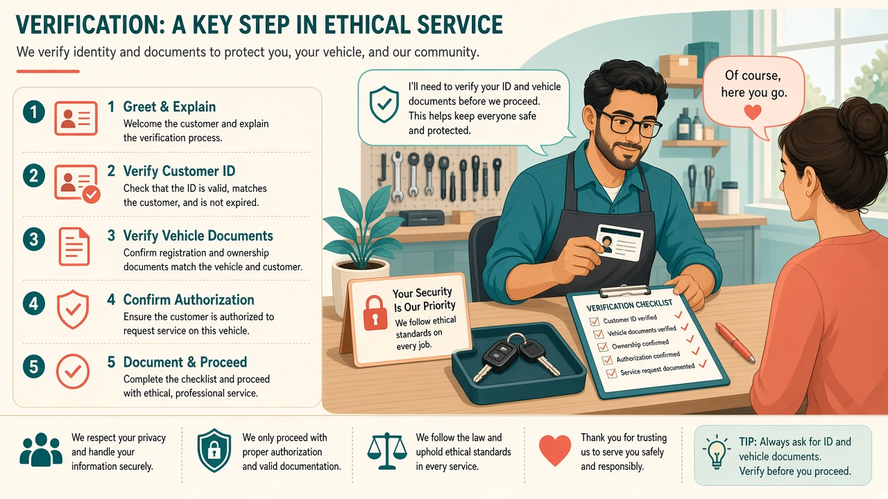
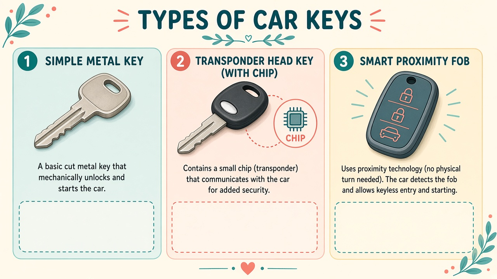
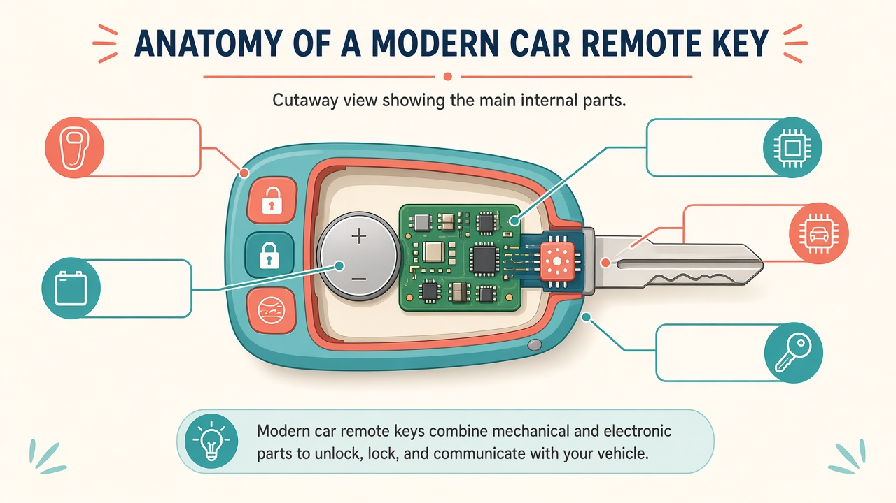
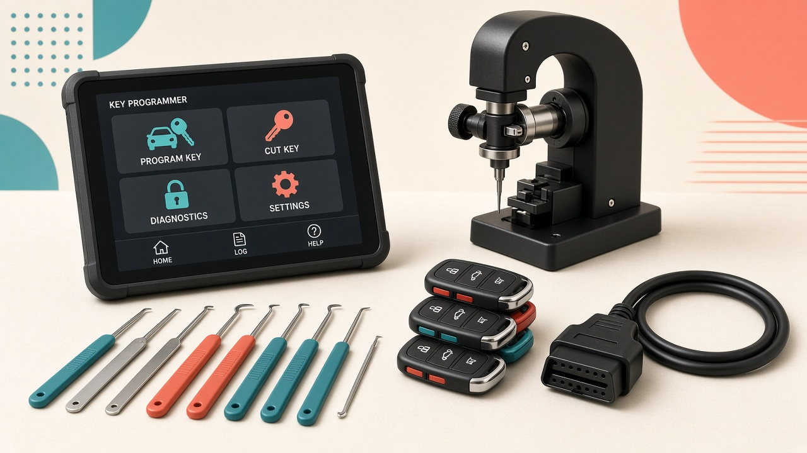
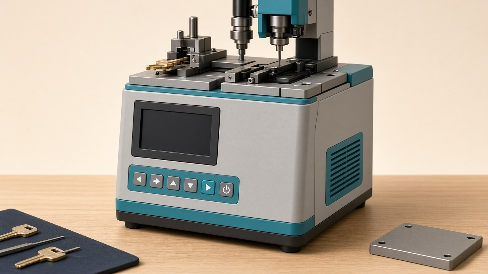
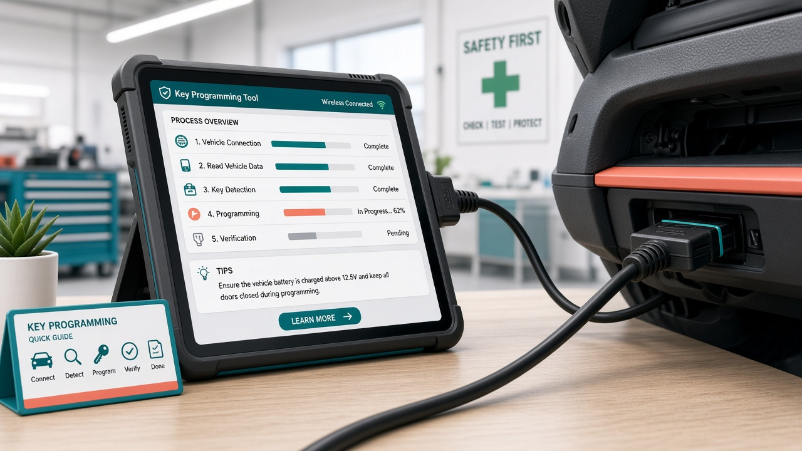
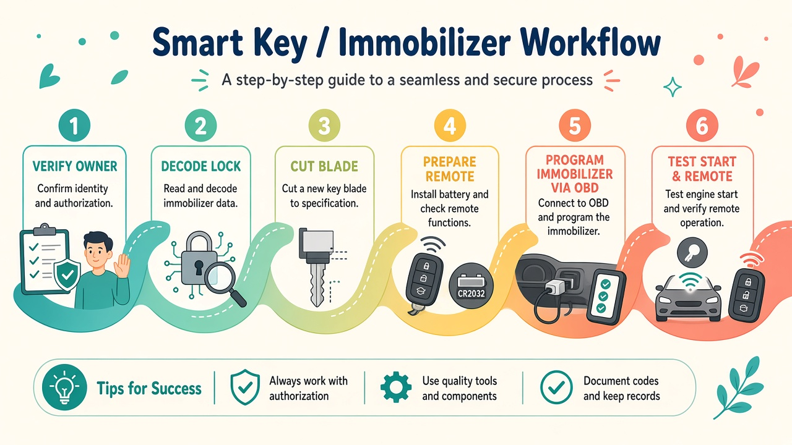

Contents
What you will master
- The profession, ethics, and the law
- How modern car keys and immobilizers work
- Job types you will actually sell
- Machines & starter kits (with price ranges)
- Consumables: blanks, chips, remotes
- Master workflow: lost remote → working key
- Step-by-step: Add Key (customer still has one key)
- Step-by-step: All Keys Lost
- Cutting the metal blade (Lishi + cutter)
- Remote / RKE / smart key programming
- Testing, delivery, pricing your service
- 90-day learning roadmap to competence
Non-negotiable rules
- Program or cut keys only for the verified owner (or authorized agent) of that specific vehicle.
- Require photo ID + vehicle registration / title / proof of ownership. Photograph and log them.
- Refuse jobs that smell like theft, “friend’s car,” or pressure to skip paperwork.
- Follow local licensing (locksmith licence, business registration, insurance). Rules vary by country/state.
- In the USA, many professional tools require NASTF / SDRM access for dealer-level security. Plan for that cost.
- This ebook teaches legitimate locksmith craft. Misuse for unauthorized vehicle access is a crime.
What “expert” really means: You will not become an expert from one PDF alone. You become competent by combining this map + tool practice + supervised jobs + brand-specific training. This book removes the fog so your first 90 days are efficient.
Chapter 1
The profession
Automotive locksmithing is a service trade: you restore access and starting capability for people who lost keys — safely, legally, and profitably.

Figure 1 — Every job starts with identity + ownership verification, not with the programmer.
What customers hire you for
Lost remote / smart key Duplicate or generate a new key and program the immobilizer so the car starts.
Broken blade Cut a new blade; often re-use or reprogram the head.
Spare key Add a second key while one still works (easiest / most profitable beginner job).
All keys lost Vehicle locked or cannot start; decode lock, cut, program without an existing key.
Skills stack
| Layer | You learn | Tools |
|---|
| Mechanical | Keyways, bitting, Lishi pick/decode, cutting | Lishi set, cutter, blanks |
| Transponder | Chip types, clone vs generate | Key tool / chip programmer |
| Immobilizer | OBD add-key / all-keys-lost | IMMO tablet + OBD cable |
| Remote / RKE | Frequency, button learning, smart proximity | Same tablet + remotes stock |
| Business | Quotes, insurance, inventory, warranty | CRM / invoice app |
Chapter 2
How car keys actually work
A modern “key” is usually three products in one: a mechanical blade (opens locks), a transponder chip (allows the engine to start), and a remote / smart module (locks, unlocks, proximity).

Figure 2 — From metal-only keys → transponder heads → smart proximity fobs.
Immobilizer in plain language
- You insert / present the key.
- The car’s immobilizer antenna challenges the chip.
- If the chip’s cryptographic answer matches a key ID stored in the immobilizer (or ECU), fuel/ignition is allowed.
- If not, the car may unlock (mechanical) but will not start.

Figure 3 — Anatomy: shell, battery, PCB, transponder zone, metal blade.
Clone vs generate vs OBD learn
- Clone: copy chip data from a working key to a blank chip (when the system allows cloning).
- Generate: create a compatible chip/remote with a key tool, then teach the car.
- OBD learn / program: put the car into programming mode via the OBD port and write the new key into the immobilizer list.
Lost-remote jobs almost always need the OBD (or dealer) step — cloning alone is not enough on most modern cars.
Chapter 3
Job types & decision tree
| Situation | Difficulty | Typical path |
|---|
| Customer has 1 working key, wants a spare | Beginner+ | Copy blade (or cut by code) → add key via OBD → test |
| Remote buttons dead, car still starts | Beginner | Battery / remote renew / relearn buttons |
| Lost all remotes, car on site, unlocked | Intermediate | Identify VIN/year → stock remote → all-keys-lost program → cut if needed |
| Locked out, no keys | Intermediate | Open legally (Lishi / entry) → decode → cut → program |
| Luxury / late-model encrypted systems | Advanced | Special modules, tokens, dealer online auth, or refer |
Know when to refer. Brand-new Mercedes, some BMW FEM/BDC, late Toyota/Lexus smart systems, and certain FCA/Stellantis vehicles can exceed a starter kit. Referring (and taking a finder’s fee or partnering) is professional — forcing a bad job destroys reputation.
Information you collect before quoting
- Exact year, make, model, trim; VIN if possible
- How many keys exist / are lost
- Does the car start with any remaining key?
- Proximity smart key or blade + remote?
- Location (shop vs mobile) and battery condition of the car
Chapter 4
Machines you need (with prices)
Prices are approximate retail USD ranges as of early 2026. Shop sales, bundles, and region change totals. Buy from reputable locksmith suppliers — counterfeit tools brick updates.

Figure 4 — Core bench: programmer tablet, cutter, Lishi set, blanks, OBD lead.
Recommended starter path (most beginners)
| Item | Role | Example models | Approx. USD |
|---|
| Portable key cutter | Cut laser / dimple / edge blades on-site | Xhorse Dolphin XP-005L (II) | $1,400–$2,200 |
| Key / remote tool | Generate remotes, clone chips, RF test | Xhorse VVDI Key Tool Max Pro | $450–$750 |
| IMMO programmer | OBD add-key / all-keys-lost | Autel IM508S / IM608S II; or Xhorse Key Tool Plus | $1,200–$4,200 |
| Original Lishi set | Pick + decode common lock profiles | HU100, HU101, CY24, NSN14, TOY43… | $400–$900 |
| Blanks / chips / remotes | Inventory for first 30 jobs | XT27 / universal remotes + OEM-style shells | $300–$800 |
| Support gear | Battery jumper, trim tools, multimeter | Generic quality brands | $150–$350 |

Figure 5 — Portable automatic key cutter (generic form factor).
Chapter 4 continued
Bundles & upgrades

Figure 6 — Tablet programmer connected to the OBD-II port under the dash.
Popular ready-made bundles (street prices)
| Bundle | What’s inside | Approx. USD | Best for |
|---|
| Lean mobile starter |
Dolphin II + Key Tool Max Pro + small Lishi pack + chips |
$2,500–$3,800 |
First 3–6 months, common Asian/US cars |
| Cut + Max Pro + Condor Mini Plus II |
Shop-grade cutter + Max Pro (+ reader options) |
$3,300–$3,600 |
Shop + mobile hybrid |
| Autel IM608S II full kit |
Flagship IMMO + diagnostics + XP400 Pro |
$3,900–$4,200 |
Broad coverage + diagnostics income |
| Condor + Key Tool Plus Pad |
Advanced all-in-one Xhorse ecosystem |
$4,500–$5,500 |
Scaling locksmith who lives in Xhorse |
Budget plan if you have ~$3,000
- Dolphin II cutter (~$1.6k–$2k)
- Key Tool Max Pro (~$0.5k–$0.7k)
- Original Lishi starter 8–12 pieces (~$0.5k)
- Remotes + chips (~$0.4k)
- Use Max Pro’s OBD coverage first; add Autel IM508/IM608 when revenue pays for it
Hidden costs: software tokens (e.g. some Mercedes BGA), annual updates, NASTF SDRM (North America), insurance, van setup, and practice cars/locks. Expect $50–$200/month in software/tokens once busy.
Where to buy
- Authorized distributors (Autel store, established locksmith houses)
- Alliance Locksmith, Key4, Locksmith Keyless, regional EU Xhorse shops
- Avoid no-name “full clone” tablets on random marketplaces
Chapter 5
Consumables & identification
Stock that pays rent
- Universal / generate remotes (Xhorse, KEYDIY, Autel iKeys) for popular vehicles in your city
- Super chips (e.g. XT27 family) for clone/generate workflows
- Test blades for Lishi practice and bitting verification
- CR2032 / CR2025 batteries, shell replacements, key rings
How to identify the key before you buy stock
- Ask for photos of any remaining key / fob.
- Look up by year-make-model in your tool’s database or a blank look-up (Ilco / JMA charts).
- Confirm FCC ID on the remote (printed under battery cover) when available.
- Confirm blade profile (HU66, HU100, TOY43, etc.).
Wrong remote = dead job. When unsure, order after VIN confirmation — or keep a returnable supplier relationship.
Chapter 6
Master workflow
Memorize this sequence. Almost every successful lost-key job is a variation of it.

Figure 7 — Verify → Decode → Cut → Prepare remote → Program → Test.
1
Verify & document. ID + ownership. Job sheet with VIN, mileage, photos of documents. Customer signature authorizing work.
2
Stabilize power. Connect a support battery / jumper. Programming fails on weak batteries and can brick modules on some cars.
3
Identify system. Scan with IMMO tool. Note immobilizer type, existing key count, and whether Add Key or All Keys Lost is supported on your device.
4
Mechanical key. If needed: decode door/ignition with Lishi (or read code from tool / door card when available), then cut on the machine. Verify smooth turn in lock.
5
Prepare the electronic key. Generate/clone chip or assemble universal remote per tool wizard.
6
Program. Follow on-screen OBD procedure exactly (ignition cycles, proximity placement, timing).
7
Test & hand over. Lock/unlock, panic, trunk, start 3 times, show customer. Explain warranty and remaining key count.
Field mantra: Power stable → procedure exact → test twice → paperwork complete.
Chapter 7
Procedure A — Add a spare (easiest money)
Customer still has at least one working key. Goal: create a second key the car accepts.
Steps
- Verify ownership and photograph documents.
- Connect battery support.
- Plug OBD tool. Select Immobilizer → Make/Model/Year → Add Key (wording varies).
- Read current key information if the tool offers it. Note how many keys are registered.
- Cut the new blade to match the working key (or by code if you decoded).
- Generate the new remote/chip in your key tool; leave it close to the start button / in the slot as instructed.
- When prompted, present the working key first (many systems require a dealer key / present key), then the new key.
- Complete the wizard. Do not yank the OBD cable mid-write.
- Test: start with old key, start with new key, remotes both work.
- Invoice. Advise customer to keep both keys; all-keys-lost later costs more.
Practice tip: Your first 20 paid jobs should ideally be Add Key on common local cars (Toyota, Honda, Hyundai/Kia, Ford, GM). Build speed before chasing exotic all-keys-lost work.
Chapter 8
Procedure B — All Keys Lost
No working key remains. Harder, higher ticket, more risk. Only attempt when your tool database shows clear support for that VIN/year.
High-level steps
- Verify ownership rigorously. If the story is inconsistent, walk away.
- Gain legal entry if locked (Lishi / manufacturer entry methods you are trained for). Do not damage airbags or wiring.
- Battery support on.
- Identify immobilizer. Choose All Keys Lost / Erase & Add path only if documented for this vehicle.
- Decode mechanical locks; cut a perfect blade; confirm door and ignition turn smoothly.
- Prepare the correct remote/smart key (proximity vs blade style).
- Run the all-keys-lost wizard. Some cars need PIN/code reading, EEPROM adapters, or online tokens — follow the tool, do not invent shortcuts.
- When finished, old lost keys should no longer start the car (security feature). Explain this to the owner.
- Test extensively. Program a second spare in the same visit if the customer agrees (highly recommended).
Risk controls: Never interrupt flash/write. Keep a backup battery. If the tool warns unsupported, stop and refer. A half-written immobilizer can leave a car dead and a lawsuit alive.
Chapter 9
Cutting the blade like a pro
Lishi decode (concept)
- Select the correct Lishi for the keyway (wrong tool damages wafers).
- Pick to open if needed; then read each wafer height to build the bitting code.
- Write the code on your job sheet.
- Enter bitting into the cutter software or use origin key duplication when a sample exists.
- Cut on a quality blank; deburr; test in the door first, then ignition.
Cutter checklist
- Correct clamp / key type selected in software
- Probe and cutter tips in good condition
- Blank seated fully and square
- After cut: smooth operation, no forced turning
A beautiful programmed remote with a bad blade is still a failed job. Mechanical excellence is half your reputation.
Chapter 11
Pricing, paperwork, professionalism
Example market pricing (illustrative; set to your city)
| Job | Parts + labor ballpark |
|---|
| Spare remote / add key (common car) | $180–$350 |
| All keys lost (common car) | $350–$700+ |
| Luxury / on-line auth systems | $700–$1,500+ |
| Emergency night / holiday call-out | Add $50–$150 fee |
Job sheet fields (copy this)
- Date, customer name, phone, address
- ID type/number (store securely per local privacy law)
- VIN, plate, year/make/model
- Job type, keys before/after, tool used, software version
- Parts used (remote model, chip, blade)
- Warranty terms (e.g. 30–90 days on programming / remote defects)
- Customer signature + “I am the owner / authorized”
Keep records. If a stolen-car investigation ever appears, your paperwork is your shield.
Chapter 12
90-day roadmap to competence
Days 1–30 · Foundations Study this book twice. Buy lean kit. Practice Lishi on donated door locks. Cut 50 practice blades. Complete an Auto 101-style video course.
Days 31–60 · Supervised work Shadow a locksmith or take only Add-Key jobs. Log every VIN and outcome. Learn your city’s top 10 vehicles.
Days 61–90 · Independence Offer mobile spare-key service. Add all-keys-lost for 2–3 well-supported brands. Raise prices as reviews arrive.
Weekly practice drills
- Decode one lock with Lishi until under 10 minutes
- Generate and RF-test 5 remotes
- Run one full mock Add-Key wizard on a practice vehicle
- Review one failed job write-up (yours or forum case study)
Continuing education
- Manufacturer TSBs and tool update notes every month
- Brand-focused classes (Toyota smart systems, GM, Ford, VAG)
- Join professional locksmith associations in your country
Definition of “ready for paid work”: You can verify ownership without hesitation, cut a clean blade, complete Add Key on a common local car without coaching, explain risks to the customer, and walk away from unsupported jobs.
Appendix
Quick reference & closing
Field kit packing list
Bag
- Programmer + OBD cables + CAN adapters you own
- Key tool / generator
- Portable cutter + spare cutters/probes
- Lishi wallet
- Laptop/phone hotspot for updates
Parts & safety
- Remotes/chips for top local cars
- Battery pack / jump pack
- Gloves, trim tools, flashlight
- Job sheets, card reader, invoice app
- Insurance card & licence copy
Glossary
| Term | Meaning |
|---|
| IMMO | Immobilizer — anti-theft that blocks starting without a valid chip |
| Transponder | RFID chip in the key that answers the car’s challenge |
| OBD-II | Diagnostic port used by programmers (usually under dash) |
| RKE | Remote Keyless Entry (lock/unlock radio) |
| PKES / smart key | Proximity keyless entry & start |
| All Keys Lost | Programming when no working key remains |
| Bitting | The cut code heights on a key blade |
Final reminder: Expertise in this field is legitimate when it protects owners who lost access. It is illegal when used to create unauthorized keys. Keep your ethics louder than your tools.
© Educational compilation for personal training use. Tool names are cited for learning; trademarks belong to their owners. Prices fluctuate — verify before purchase. Always comply with the laws of your jurisdiction.